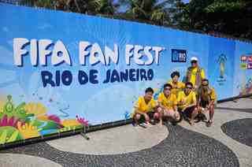
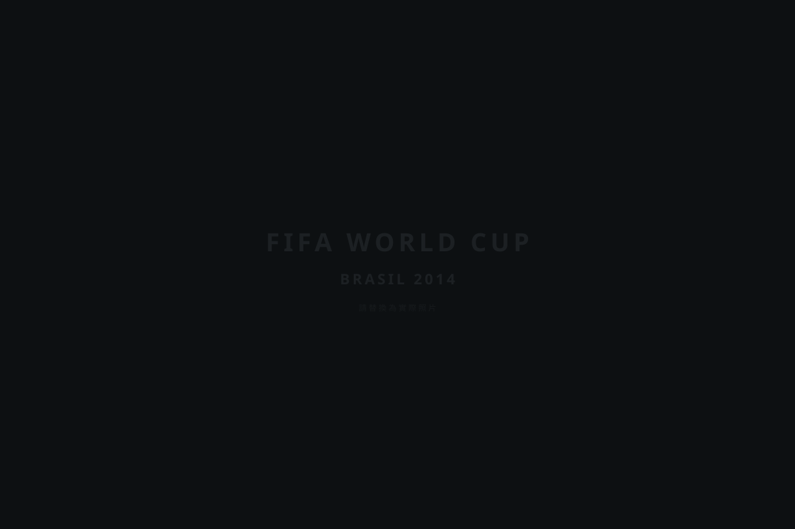

從一顆球開始
Lower、Upper、Sit-down 與 Transition 是我的動作語彙；真正讓演出完整的，是每一次和觀眾的眼神、驚呼與擊掌。
About Spider
我是唐心磊，花式足球運動員、街頭藝人與教練。從街頭、商場、校園到國際賽事，我用技巧、節奏、幽默與互動，讓足球在空中舞動。

Lower、Upper、Sit-down 與 Transition 是我的動作語彙；真正讓演出完整的，是每一次和觀眾的眼神、驚呼與擊掌。
不是等到有空才練，而是每天主動留出時間，把喜歡的事一點一點練成專業。
觀看人物專訪 ↗因為太喜歡足球，我和昔日足球隊友相約前往巴西，親眼看世界盃。這趟旅程讓我更確定，足球能跨越語言、文化與國界，把友情和夢想連在一起。

